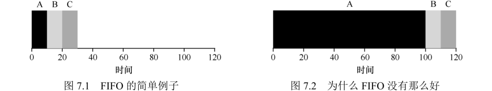
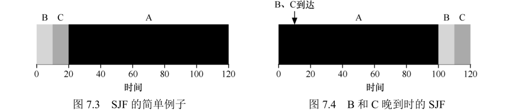
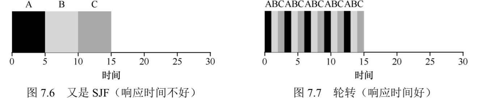
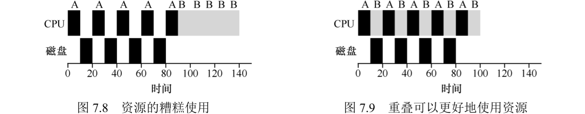

工作负载假设
- 确定工作负载是构建调度策略的关键部分。对工作负载了解得越多，调度策略就越优
- 对进程（工作任务）进行如下假设，这些假设并不现实，随着调度策略的发展会逐渐放宽：
- 每个工作运行相同的时间
- 所有工作同时到达
- 每个工作一旦开始就保持运行直到完成
- 所有工作只用到cpu
- 每个工作的运行时间已知
调度指标
- 任务的
周转时间：任务完成的时间减去任务到达的时间
- 周转时间是一个性能指标，性能和公平在调度中经常是矛盾的
先进先出（FIFO）
- 最基本的算法是
先进先出(First In First Out, FIFO)，或称先到先服务(First Come First Served, FCFS)
- 例子：工作ABC在t=0同时到达，每个工作耗时10s，顺序执行，则平均周转时间(10+20+30)/3=20
- FIFO的问题：
护航效应，假设多个任务的运行时间不相同，FIFO可能导致时间长的任务排在前面，导致所有任务的周转时间变长，如图7.2

- 例子：工作ABC同时到达，耗时为100s/10s/10s，顺序执行，则平均周转时间(100+110+120)/3=110
最短任务优先（SJF）
最短任务优先(Shortest Job First, SJF)可解决护航效应：任务同时到达时，越短的任务越优先执行- 例子：工作ABC同时到达，耗时为100s/10s/10s，则平均周转时间(10+20+120)/3=50
- 对于所有工作同时到达的情形，使用周转时间作为调度指标，SJF是一个最优算法
- SJF的问题：假设多个工作不同时到达，即使短任务稍微晚到，仍需等待长任务执行完，如图7.4

- 抢占式和非抢占式：
- 早期的批处理计算经常是
非抢占式调度，将每项工作做完再考虑新的工作
- 几乎所有的现代化调度程序都是
抢占式调度，允许停止一个进程以运行另一个进程。特别是调度程序可进行上下文切换，临时停止/恢复一个进程
最短完成时间优先（STCF）
- SJF是非抢占式调度，STCF是抢占式调度
最短完成时间优先(Shortest Time-to-Completion First, STCF)，或称抢占式最短作业优先(Preemptive Shortest Job First, PSJF)：每当新工作进入系统时，就确定剩余工作和新工作中谁的剩余时间最少，抢占式调度该工作，如图7.5

- STCF可大幅优化平均周转时间
- 任务同时到达时SJF是最优，任务不同时到达时STCF是最优
新度量指标：响应时间
- 在批处理系统中可只考虑周转时间，但分时系统中要考虑与用户的交互，即响应要快
- 任务的
响应时间：从任务到达到首次运行的时间
- STCF及其相关方法在周转时间上很优，但在响应时间上不好。长任务需要等待短任务执行完才能开始执行
轮转
轮转(Round-Robin, RR)：在一个时间片(time slice，或称调度量子scheduling quantum)内运行一个工作，随后切换到运行队列中的下一个任务，而不是运行一个任务直到结束。反复执行知道所有任务完成。- 轮转的时间片长度必须是定时器中断周期的整数倍
- 例子：工作ABC同时到达，耗时都为5s，SJF的平均响应时间是(0+5+10)/3=5，RR的平均响应时间是(0+1+2)/3=1，如图7.6和7.7

- 时间片长度选择：
- 时间片太短，会增加上下文切换的开销。时间片太长，响应时间长。
均摊(amortize)：系统操作有固定成本（额外开销）时，使用均摊减少使用这些固有成本的频率，降低相对的额外开销- 权衡时间片的长度使其足够长，以均摊上下文切换的成本，又不会使系统响应不及时
上下文切换的成本不仅仅来自保存/恢复寄存器的操作。程序运行时在cpu缓存、TLB、分支预测器和其他片上硬件中建立了大量状态，切换到另一个工作将导致这些状态被刷新，旧状态被保存，新状态被引入，这将导致显著的性能成本- RR将导致周转时间延长，它是周转时间几乎最差的调度算法，经常比FIFO更差。因为RR的本至是延伸每个工作，每个工作只运行一小段时间就转向下一个工作。
周转时间和响应时间是矛盾的：任何公平（即在小规模时间内将cpu均匀分配给进程）的策略，其周转时间的表现都不好。这是公平和效率的固有权衡。
结合I/O
- 重叠操作可最大限度地提高系统的利用率
- 所有的程序都需执行IO
- 调度程序应在工作发起IO请求时做出决定，因为工作在IO期间被阻塞，不会使用cpu
- 调度程序应在工作完成IO操作时做出决定，此时会产生中断，运行OS并将使用IO的进程从阻塞移动到就绪状态
- 不使用重叠和使用重叠如图7.8和7.9

- 将每个cpu突发看作一项子工作，调度程度确保“交互”的进程经常运行，这些交互式作业执行IO时，其他cpu密集型作业会运行，更好的利用cpu
无法预知
小结
- 两类方法：
- 运行最短的工作，优化周转时间
- 交替运行所有工作，优化响应时间
文章作者
canpi
上次更新
2020-06-30
许可协议
CC BY-NC 4.0
文章阅读量
0